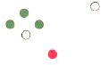
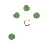
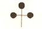
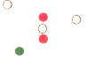
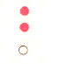
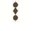
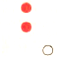
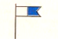
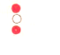

| 141. Кой кораб носи тези светлини?:  |
|
Кораб, зает с тралене на мини с дължина под 50м, движи се на дясно Кораб, зает с тралене на мини с дължина под 50м, движи се на ляво Кораб, зает с тралене на ми-ни с дължина над 50м, движи се на ляво Кораб, зает с тралене на мини с дължина над 50м, движи се на дясно |
| документ регламентиращ правилния отговор: GOLREG (rule27/f) |
| 142. Кой кораб носи тези светлини?:  |
|
Кораб, зает с тралене на мини с дължина под 50м, движи се на дясно Кораб, зает с тралене на мини с дължина над 50м, движи се на ляво Кораб, зает с тралене на мини с дължина над 50м, движи се на дясно Кораб, зает с тралене на мини с дължина под 50м, движи се на ляво |
| документ регламентиращ правилния отговор: GOLREG (rule27/f) |
| 143. Кой кораб носи тeзи знаци?:  |
|
Кораб, ограничен в способността си да маневрира Кораб, зает с миночистачни дейности Кораб без управление Риболовен кораб |
| документ регламентиращ правилния отговор: GOLREG (rule27/f) |
| 144. Виждате светлините и знаците на кораб, зает с миночистачни деиности. Какво означават?: |
|
Опасно е приближаването на друг кораб на разстояние, по-малко от 1000м. Опасно е изпреварването на виждания кораб от десния му борд Опасно е изпреварването на виждания кораб от левия му борд Опасно е приближаването на друг кораб на разстояние, по-малко от 500м. |
| документ регламентиращ правилния отговор: GOLREG (rule27/f) |
| 145. Кой кораб носи тези светлини?:  |
|
Кораб, ограничен в способността си да маневрира, няма ход относно водата Кораб, зает с буксировка и е ограничен във възможността си да маневрира Кораб, ограничен в способността си да маневрира, вижда се десния борд Кораб, ограничен в способността си да маневрира, вижда се левия |
| документ регламентиращ правилния отговор: GOLREG (rule27/b) |
| 146. Кой кораб носи тези светлини?:  |
|
Кораб, ограничен в способността си да маневрира, на котва Кораб без управление, вижда се кърмовата му част Риболовен кораб, няма движение от-носно водата Пилотски кораб, вижда се кърмовата му част |
| документ регламентиращ правилния отговор: GOLREG (rule27/c) |
| 147. Кой кораб носи тeзи знаци?:  |
|
Кораб, зает с буксировка и е ограничен във възможността си да маневрира Кораб ограничен в способността си да маневрира Кораб без управление Кораб, ограничен в способността си да маневрира, на котва |
| документ регламентиращ правилния отговор: GOLREG (rule27/б) |
| 148. Кой кораб носи тези светлини?:  |
|
Пилотски кораб, вижда се кърмовата му част Кораб без управление, няма ход относно водата Риболовен кораб, няма движение относно водата Кораб без управление, на ход, виждаме кърмата му |
| документ регламентиращ правилния отговор: GOLREG (rule27/a) |
| 149. Кой кораб носи този флаг през деня?:  |
|
Пилотски кораб Кораб без управление Риболовен кораб Кораб, зает с водолазна дейност |
| документ регламентиращ правилния отговор: GOLREG (rule27/e) |
| 150. Кой кораб носи тези светлини?:  |
|
Кораб, зает с водолазна дейност Пилотски кораб Риболовен кораб Кораб без управление |
| документ регламентиращ правилния отговор: GOLREG (rule27/e) |